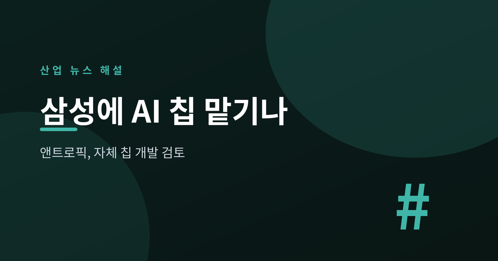
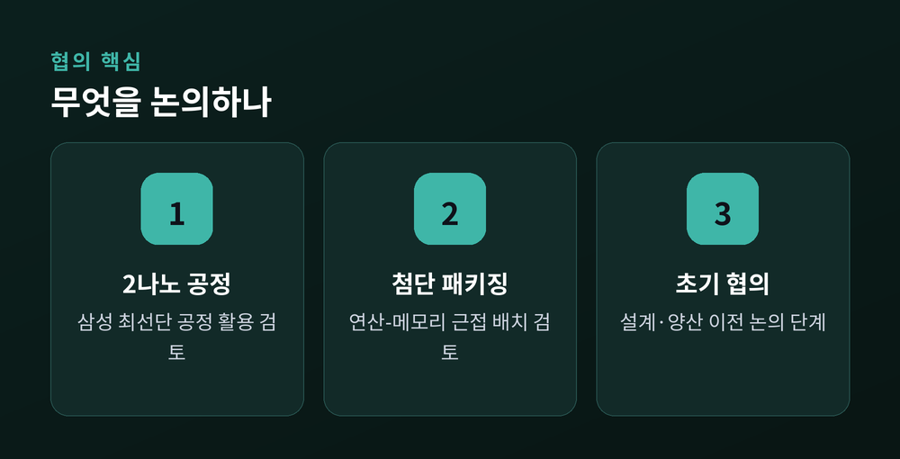
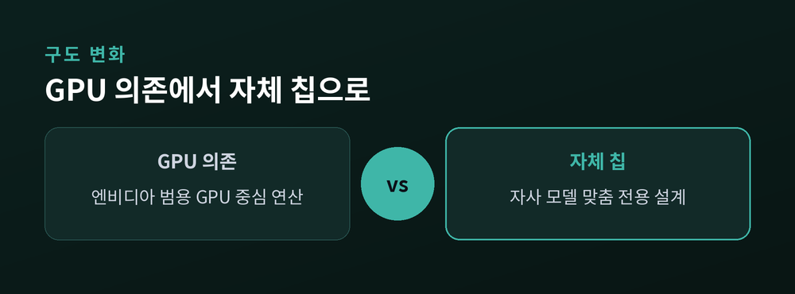
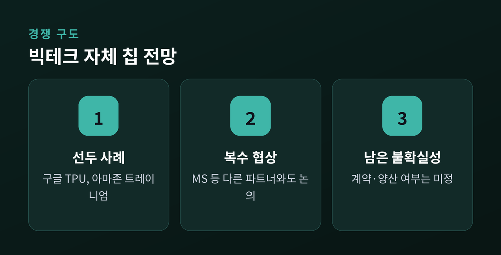

자체 칩 시대의 신호

앤트로픽이 자체 AI 칩 개발을 추진하며 삼성전자를 잠재 생산 파트너로 검토하고 있다는 외신 보도가 나왔습니다. 아직 계약이 확정된 단계는 아니지만, 빅테크·AI 기업들이 엔비디아 GPU 의존에서 벗어나려는 흐름 속에서 나온 소식이라 주목됩니다.
2026년 7월 초, 더 인포메이션 등 외신은 앤트로픽이 삼성전자와 자체 AI 칩 생산을 놓고 협의 중이라고 보도했습니다. 보도에 따르면 논의는 삼성 파운드리의 2나노 공정과 첨단 패키징 기술 활용에 초점이 맞춰져 있습니다. 첨단 패키징은 연산 칩과 메모리를 가깝게 배치해 데이터 전송 속도를 높이고 병목을 줄이는 기술입니다.
다만 외신들은 이번 논의가 초기 단계라는 점을 분명히 하고 있습니다. 칩이 어떤 용도에 최적화될지, 성능 수준을 어느 정도로 할지, 서버 랙에 어떻게 탑재할지 등 세부 설계는 아직 정해지지 않았다고 전해집니다. 앤트로픽은 삼성 외에도 복수의 칩 설계 회사와 함께 논의를 진행 중인 것으로 알려졌습니다.

이번 소식이 의미 있는 이유는 두 가지입니다.
첫째, 앤트로픽의 행보가 빅테크의 'AI 칩 내재화' 흐름에 합류하는 신호이기 때문입니다. 구글은 2015년부터 자체 칩 TPU를 운영해왔고, 아마존은 학습용 트레이니엄과 추론용 인퍼런시아를 나눠 쓰고 있습니다. 앤트로픽 역시 지난달 오픈AI의 자체 칩 프로젝트를 이끌었던 인물을 영입하며 반도체 역량을 강화해온 것으로 전해집니다. 범용 GPU 대신 자사 모델 연산에 맞춘 전용 칩을 쓰면 비용 효율과 성능 최적화 측면에서 이점을 기대할 수 있습니다.
둘째, 삼성 파운드리에는 상징적인 수주 사례가 될 수 있습니다. 삼성은 지난 5월 앤트로픽의 대규모 투자 유치에 SK하이닉스, 마이크론과 함께 전략적 파트너로 참여한 바 있습니다. 이번 논의가 실제 생산으로 이어진다면, 파운드리 시장에서 TSMC에 도전할 만한 대형 고객을 확보하는 계기가 될 수 있습니다.

관건은 이 논의가 실제 계약과 양산으로 이어지느냐입니다. 현재까지는 '검토·협의' 단계이며, 세부 설계와 시험 생산 이전 단계로 알려져 있습니다. 앤트로픽은 마이크로소프트의 자체 칩 공급 논의도 별도로 진행해온 것으로 전해져, 최종적으로 어떤 파트너와 손잡을지는 지켜봐야 합니다.
업계에서는 엔비디아 의존도 완화가 하루아침에 이뤄지지는 않을 것으로 보고 있습니다. 다만 오픈AI, 구글, 아마존에 이어 앤트로픽까지 자체 칩 대열에 합류할 조짐을 보이면서, 엔비디아의 절대적 지배력에 대한 전제가 조금씩 흔들리고 있다는 평가가 나옵니다.

| 구분 | 범용 GPU 의존 | 자체 맞춤 칩 |
|---|---|---|
| 공급처 | 엔비디아 등 외부 | 자사 설계 + 파운드리 위탁 |
| 최적화 | 범용 연산 | 자사 모델 전용 최적화 |
| 비용 구조 | 높은 구매·의존 비용 | 초기 투자 크지만 장기 효율 기대 |
| 현재 상태(앤트로픽) | 여전히 주력 | 삼성 등과 초기 협의 단계 |